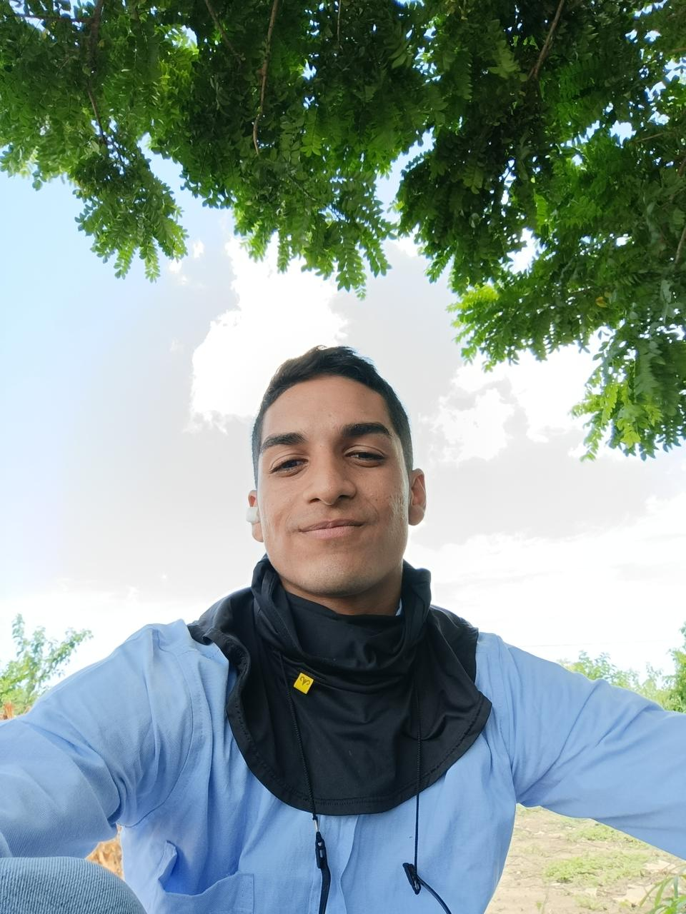

Sobre Mí

Me destaco por ser una persona enfocada, responsable, autónoma, motivada y ética; capaz de tomar decisiones con mente abierta dispuesta a aprender.
Habilidades
- Word
- Autodesk Civil 3D
- Autodesk AutoCAD
- Excel
- Visual Studio (java, python, html)
Educación
- Bachiller: Colegio Domingo Sabio (2012-2018)
- Curso: Mentalidad empresarial - SENA (2020)
- Fundamentos en Topografía: Politécnico de Colombia (2022)
- Ingeniería de Sistemas: Semestre 3 - Institución Universitaria Americana (2024)